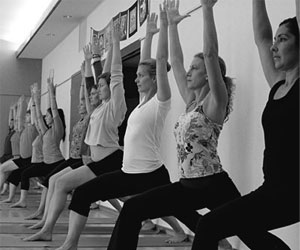

Grunnutdanning er internasjonal og består vanligvis av et år kurs og en to-årig utdanning, som er eksamen to ganger i prosessen:
- Bachelornivå jeg for minst 60 timers undervisning
- Introductory Level II i minst 60 timer med undervisning
Tillate et minimum av seks til tolv måneder før en aspirant som har gått Nivå jeg kan ta eksamen på nivå II.
Opplæring bør foregå på et godkjent opplæringssenter leder med CM og gjennom hele kurset må du være medlem av IYFDK å gå opp til eksamen. Når Bachelornivå II har passert, kan du søke om sertifisering Mark (CM), kommunisert via IYFDK. Da har du tillatelse til å lære og bruke BKS. Iyengar system, metoder og CM-logoen i reklame, på brevpapir, nettsted etc..
Før kursstart må du ha studert i minst 3 år med en kvalifisert lærer med en sertifisering Mark i Danmark eller et annet land. Timer dokumentert på søknadsskjemaet når du søker om opptak. Søkere må være medlem av IYFDK.
Pedagogiske trinn:
I Norge har vi lærere med følgende opplæring trinn:
Første Introductory Certificate Level II
Second Intermediate Junior Certificate, Nivå I
Tredje Intermediate Junior Certificate, Level II
Fjerde Intermediate Junior Certificate, Nivå III
Jo høyere nivåer av Senior og Senior Advanced er for tiden Ingen har i dette landet, og eksamen kan bare bringes inn i et land som har Iyengarlærere med tilstrekkelig opplæring eller i Pune. Følgende nivåer:
I) Intermediate Senior Certificate nivå I, II og III
II) Advanced Junior Certificate nivå I, II og III
III) Advanced Senior Certificate nivå I og II
Hver sertifikat har en spesifikk læreplan.
Eksamen holdes en eller to ganger i året. Ifølge internasjonale regler, må det være en moderator og to eller tre takstmenn, avhengig av grad. Training Manager er en observatør og kan ikke delta i vurderingen av individuelle prestasjoner. IYFDK vil også være en observatør.
Når faglig leder er ansvarlig for undersøkelsen, er det den enkelte leder som avgjør plassering, pris og muligens. innskudd, mens krav til moderatorer og dommere følger internasjonale regler.
Når IYFDK involvert i en eksamen, sendte en invitasjon via nyhetsbrevet rundt. 6-9 måneder før eksamen dagen, hvor det vil være informasjon om beliggenhet, grad nivåer og pris. Man registrerer deg ved å sende inn påmeldingsskjema og innskudd. Bare når depositum er mottatt, er du registrert for eksamen.
Da får du informasjon om frist for innlevering av oppgaver sendt inn. Oppgavene vil typisk omfatte:
- Liste over asanas
- Hvor mange asanas, å bli undervist
- Skriftlig oppgave
- Form å fylle ut den medisinske historie
Skriftlige oppgaver må leveres på engelsk. På den praktiske testen blir undervist på dansk eller engelsk.
Hvis du er forhindret fra å møte dere ikke får sine depositum refundert.
For å opprettholde CM (Certification Mark) har BKS. Iyengar fastslått at alle lærere årlig delta i videre utdanning med minimum 20 timers kurs med en lærer som har minst én eksamen nivå over ens egen. Dette er dels å utvikle sine egne yoga, få mer erfaring og innsikt, lære mer, andre, nye metoder og dels bli en bedre lærer.
Når man har fullført 3-årig Iyengar Yoga, blir man vertifisert som Iyengar Yoga instruktør. Med tittelen Iyengar Yoga, kan man starte eget Yoga hus, hvor man kan praktiserze yoga.
Det er fullt mulig å ha Yoga om fulltidsjobb.
Mange yogainstruktører i landet er fulltidsinstrukøter, hvor dem driver sitt eget Yogahus. Dem påstår at de har den beste jobben som går an å få, Yoga gir dem en kreativ og avslappet arbeidsdag.
Et kreativt sinn er et rolig sinn.

www.iyengaryoga.com
www.dendanskeyogasiden.dk
www.utdanningskriterier.pd
www.yogaforalle.net
The path to holistic health
Yoga: The Iyengar Way
Bøker hos bokkilden.no